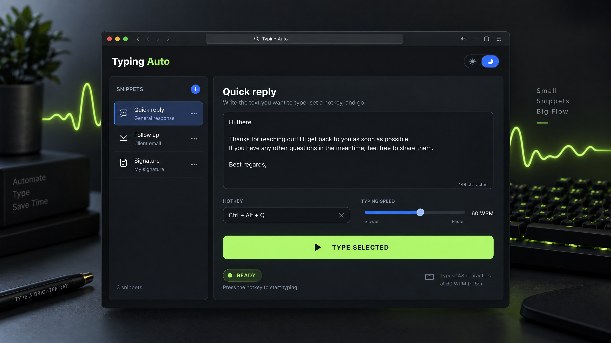

Snippet shelf
Replies, addresses, commands, and templates in one editable local library.
LOCAL DESKTOP TOOL
Keep your reusable words close. Type them into the field you control, at the pace you choose, with a clear status and an emergency stop.

WHAT IT IS
Save snippets locally, bind optional global hotkeys, tune the speed, and type into a focused field. Typing Auto is intentionally visible and straightforward.
Explore features →AT A GLANCE
Replies, addresses, commands, and templates in one editable local library.
Characters, tabs, and line breaks are sent through the operating system keyboard layer.
Set characters per minute, timing variation, and a countdown before typing starts.